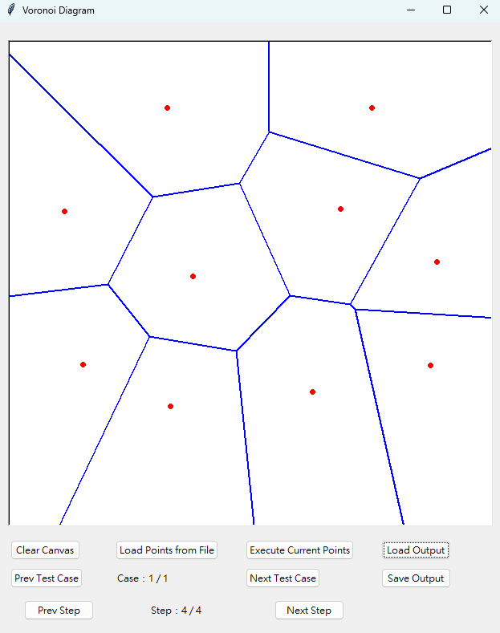
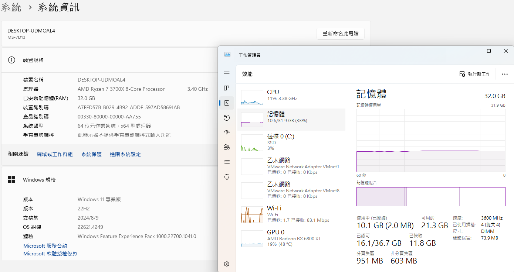
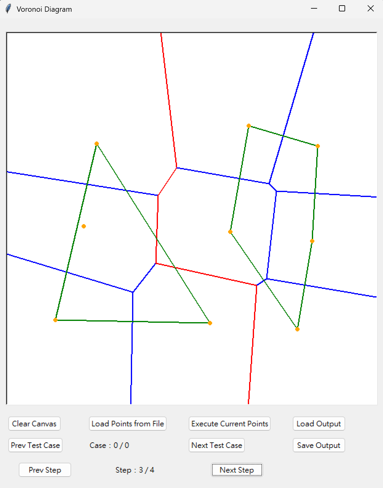
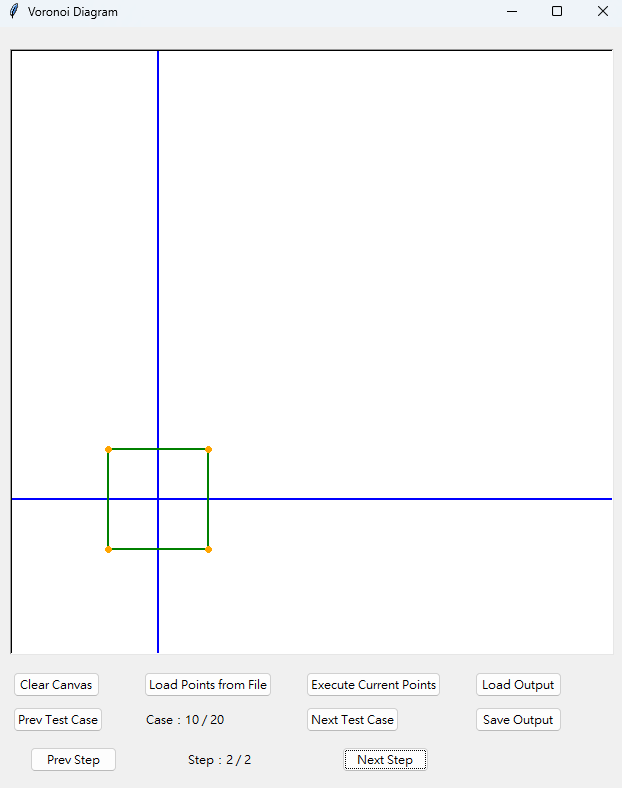
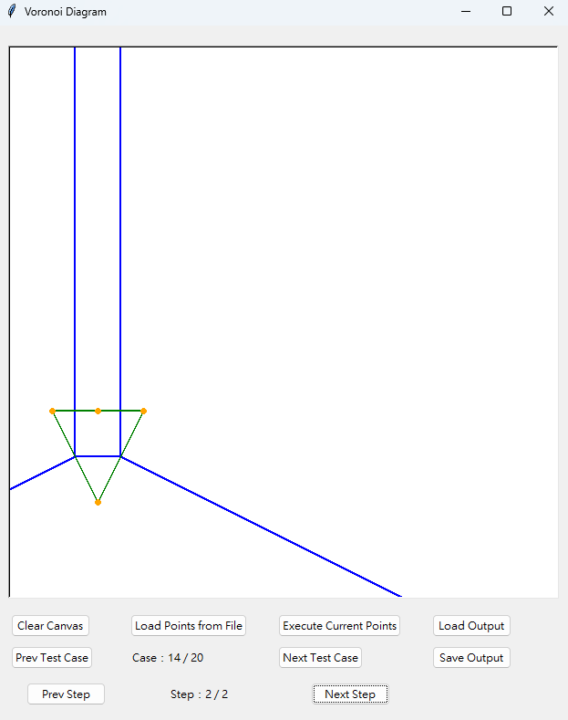

軟體規格書
-
輸出與輸入（資料）規格
輸入：- 畫布上任意點擊，畫布大小為 602 x 602
- 輸入檔.txt，包含多筆測資與註解，輸入檔案範例
- 輸出檔.txt，直接在畫布中繪製線與點，格式如下方
輸出檔案範例
輸出檔案格式如下：
- 點：
P X Y// 每個點佔一行，兩整數 x, y 為座標 - 線段：
E X1 Y1 X2 Y2// (X1, Y1) 為起點，(X2, Y2) 為終點，其中X1≦Y2或X1=X2, Y1≦Y2 - 點座標在前半段，線段在後半段，且以座標用字典序(lexical order)排序
輸出文字檔案範例：
P 100 100 P 100 200 P 200 100 P 200 200 E 0 150 150 150 E 150 0 150 150 E 150 150 150 600 E 150 150 600 150
功能規格與介面規格
操作介面：圖1 初始狀況
圖2 計算結果
- Clear Canvas：清除畫布上所有點與線段
- Load Points from File：讀取輸入文字檔
- Execute Current Points：計算當下畫布上的點
- Load Output：讀取輸出文字檔
- Prev Test Case：顯示上一筆測資 Next Test Case：顯示下一筆測資
- Save Output：輸出「輸出文字檔」
- Prev Step：合併步驟中的上一步 Next Step：合併步驟中的下一步
軟體測試規劃書
1 點：不做任何動作
2 點：找兩點的垂直平分線
3 點：找三點的外心，並以外心為為起點，往外畫出三條垂直平分線
4～6 點：Divide 及 Merge 一次
7～9 點：Divide 及 Merge 兩次
大於 9 點：Divide 及 Merge 三次 以上
軟體說明
-
軟體安裝
- 1. 下載程式壓縮檔
- 2. 解壓縮後，點擊「dist」資料夾 後再點擊「index」資料夾
- 3. 點擊「index.exe」執行檔
注意：勿移動/修改/刪除其他附加文件或檔案
-
使用說明
滑鼠點擊畫布讀取 點座標檔案
圖3 點擊畫布

圖4 計算Voronoi Diagram
讀取 輸出文字檔
圖5 讀取點座標

圖6 自動計算Voronoi Diagram
多筆測資圖7 讀取輸出檔
圖8 繪製點與線
Step by Step圖9 第 12/20 筆測資
圖10 第 13/20 筆測資
圖11 第一步(merge前)

圖12 第二步(merge後)
程式設計
-
資料結構
-
Point
-
double x, y; //紀錄點座標
bool operator==(const Point& other) // overload 等於判斷
Point& operator=(const Point& other) // overload 指派
bool operator<(const Point& other) // overload 小於判斷
bool operator!=(const Point& other) // overload 不等於判斷
Edge
-
Point Start; // 線起點座標
Point End; // 線終點座標
Point A; // 做中垂線的點 A 座標
Point B; // 做中垂線的點 B 座標
Point / Edge vector
-
vector<Edge> mid_edge; // 紀錄HyperPlane的Edge
vector<Edge> RightEdge; // 紀錄右邊的Edge
vector<Edge> LeftEdge; // 紀錄左邊的Edge
vector<Edge> voronoi; // 紀錄合併後的Edge
vector<Point> RightConvexhull; // 紀錄右邊的凸包
vector<Point> LeftConvexhull; // 紀錄左邊的凸包
-
-
三個點以下
-
兩點
- 先找出兩點的中點，再找出中垂線 三點
-
找出三點的外心，再以外心為起點，往外畫出三條垂直平分線
直角、銳角、鈍角的外心位置不同，因此在畫線時需分開處理

圖13 兩點的垂直平分線

圖14 三點的垂直平分線
-
超過三個點
-
流程
-
voronoi() { if(點數量 == 1) return; else if(點數量 == 2) return 兩點的垂直平分線; else if(點數量 == 3) return 三點的垂直平分線; else { L_Point = voronoi(L, M); // 左邊的點 R_Point = voronoi(M, R); // 右邊的點 return Merge(L_Point, R_Point); } }
合併(Merge) -
Edge的起終點皆在Hyperplane的同一側(如：右側Edge的起終點皆在Hyperplane右側)，則不動作
Edge的起終點皆在Hyperplane的另一側(如：右側Edge的起終點其一在Hyperplane的左側)，則刪除
Edge的起終點在Hyperplane的兩側，則將另一側的點更改為相交位置
Sort：將點依照 x 座標排序，若 x 座標相同則依照 y 座標排序
Divide：將點分成左右兩邊，再遞迴處理左右兩邊的點
如果： 點數量 <= 3，則直接回傳垂直平分線
否則： Merge(將左右兩邊的結果合併)
虛擬碼
找出左右兩邊構成的上切線，以此出發
途中撞到左右 Voronoi diagram ，就改變行進方向
清除多餘的 Voronoi diagram
圖15 合併之前
圖16 合併過程
-
-
Convex Hull
-
透過 Voronoi diagram 尋找(PPT. 4-37)
After a Voronoi diagram is constructed, a convex hull can by found in O(n) time.
若該 Edge 往外無限延伸，則組成該 Edge 的A、B點為 Convex Hull 的點
圖17 綠色 Edge 的A、B點為Convex Hull的點
軟體測試與實驗結果
-
執行環境
- 作業系統：Windows 11 專業版 22H2
- 編譯器：g++ 14.2.0 / Python 3.12.2
- 硬體配置：R7 3700x / DDR4 3600MHz 8G*4 / RX6800XT
圖18 執行環境
-
實驗結果
-
合併過程
圖19 2點與2點合併

圖20 2點與3點合併
3 點以下圖21 4點與5點合併

圖22 合併結果
4 ~ 6 點
圖23 直角三角形

圖24 三點平行
7 ~ 9 點圖25 正方形 (水平+垂直)
圖26 3點水平、2點垂直
10 點以上
圖27 隨機 7 點
圖28 隨機 8 點

圖29 隨機 12 點
圖30 隨機 15 點
結論與心得
初測
初測的內容較簡單，只有 1~3 個點，因此只需要直接計算就好。
較複雜的部份為三點時的處理，除了要找外心，還要判斷直角、銳角、鈍角的情況。
而在此階段還未使用到 Divide-and-Conquer，因此很容易忽略資料結構與演算法的設計，導致後續撰寫困難。
為了使 C++ 和 Python 打包成一個檔案，也讓我吃了不少苦頭。
後測
如果程式只需要divide和merge一次，則狀況較單純，找到上切線後一直往下找即可
需注意的部分為左右的Edge與Hyperplane相交的位置相同。
當點數量超過6個時，狀況就變得極為複雜，有許多特例需要判斷和處理
只要有一步做錯，就會產生蝴蝶效應，而使其後續越錯越多。
因初測時未考慮後續的規劃，經常寫到一半才發現缺少某些資料或資料結構設計不佳，為此也付出了慘痛的代價(重寫4、5次)。
結論 / 心得
在寫程式之前，需要詳細規劃每一個步驟，避免後續的困難。
發現程式碼有缺漏或方向不對時，有些時候砍掉重寫會比Debug或彌補過錯來的快。
當merge的過程出現錯誤時，很難馬上找到問題點，必須要逐行註解慢慢排除，這個過程也是十分煎熬。